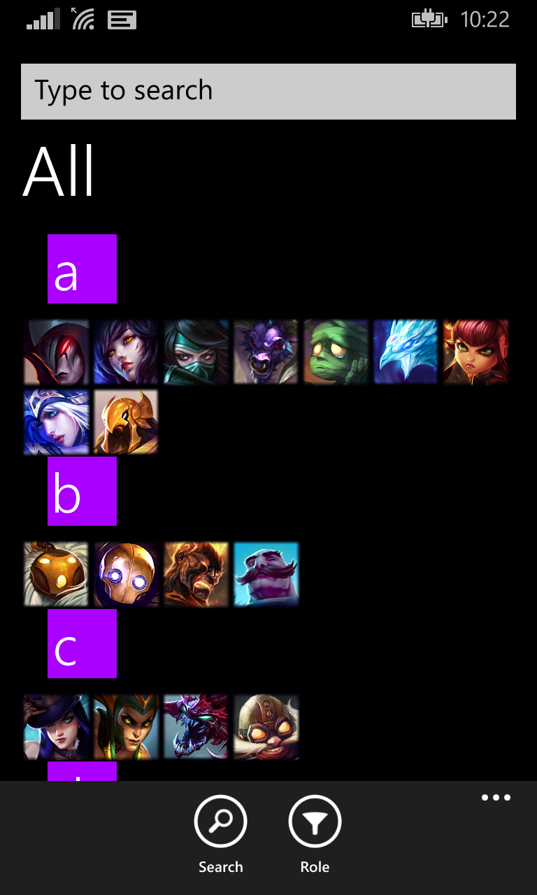

League Season 5 Counters
This is a utility app for a popular online game and has met massive success on the Windows app store with a massive community. Utilising an Azure .Net backend in C#, League Season 5 Counters is a Wikipedia of sorts, where any user can contribute their expertise by submitting data to my app, as well as reading expert opinions from other users, including mine, across the globe. Originally a project created in my first year summer for the Universal Windows 8.1 platform, this app has undergone massive changes throughout the years. With the release of Windows 10, and the unification of all Windows apps under one codebase for platforms such as Xbox One, tablet, PC, Phone, IoT, I recently decided to release my app to Windows 10 as well. This happened to be one of the best decisions in my life, as my app shot in ratings, downloads, and user base significantly. Don't take my word for it -- look at the statistics yourself ;)